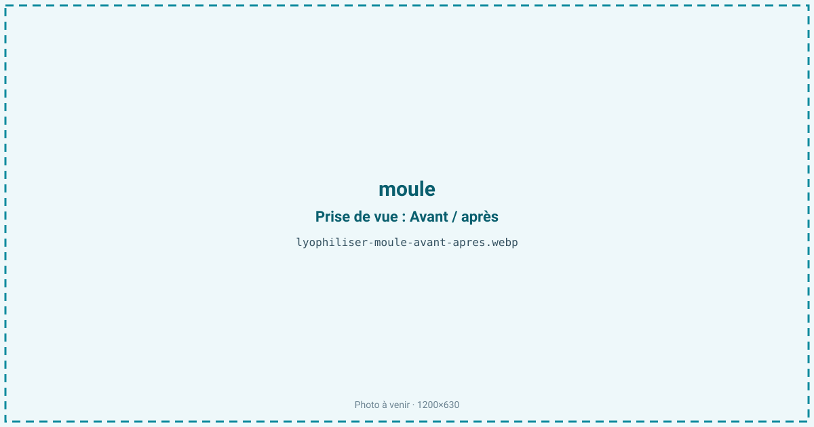
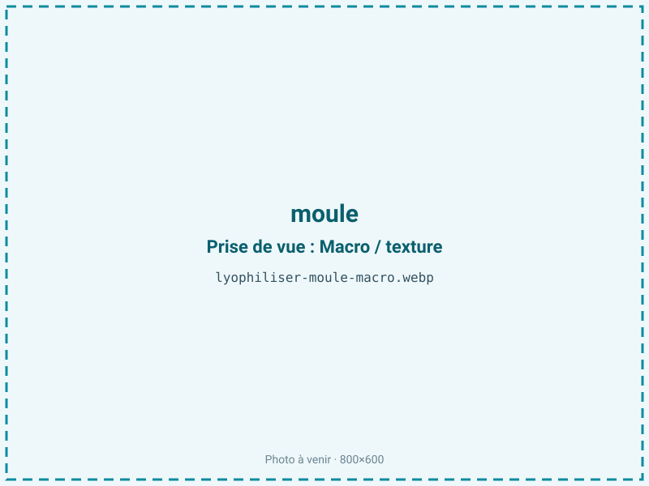
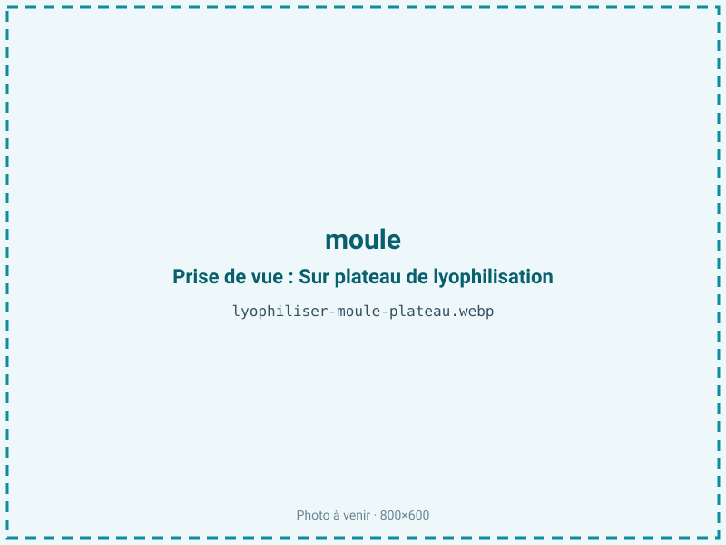
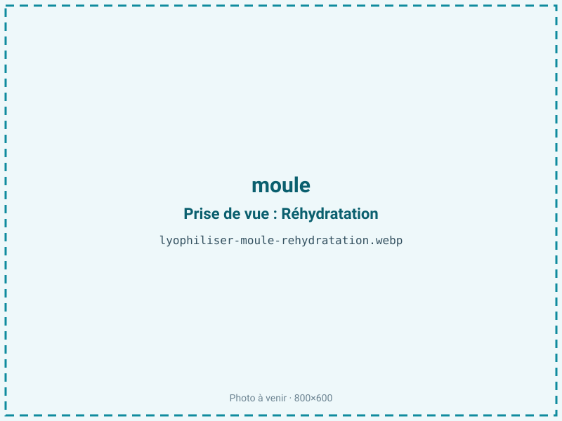

Lyophiliser des moules
La moule fraîche est vivante, périssable et encombrante à transporter en coquille. Lyophilisée après décoquillage, sa chair orangée devient une bouchée légère et une poudre umami qui se réhydratent en quelques minutes, sans la cuisson qui la caoutchouterait. Un ingrédient marin économique pour soupes, paëllas et en-cas protéinés.

En bref
Comment moule se comporte à la lyophilisation
La chair de moule renferme environ 80 % d'eau, un taux élevé de glycogène et des sels marins qui abaissent son point de congélation et rallongent la phase de solidification. Deux tissus cohabitent : un muscle adducteur dense et un manteau très fin, si bien que le front de sublimation ne progresse pas à la même vitesse dans les deux, d'où le risque d'un cœur de muscle encore humide quand le manteau est déjà sec. La teinte orangée provient de caroténoïdes logés dans une fraction lipidique faible, inférieure à 2 %, ce qui classe la moule parmi les produits maigres. Le glycogène et les acides aminés libres, porteurs du goût iodé, traversent bien le procédé. Le point critique reste la congélation : menée lentement, elle forme de gros cristaux qui percent les fibres et libèrent l'eau intracellulaire à la réhydratation, donnant une chair spongieuse. Le sable et les résidus de byssus, s'ils ne sont pas éliminés avant traitement, se concentrent et deviennent perceptibles sous la dent.
Paramètres de cycle
Décoquiller, ébarber le byssus et rincer soigneusement le sable avant tout traitement : ces résidus se concentrent au séchage et ne s'éliminent plus une fois la chair sèche. Congeler rapidement à −30 °C pour former de petits cristaux et préserver la fibre. Étaler les chairs en couche régulière de 8 à 12 mm, sans les empiler, le muscle adducteur étant plus lent à sécher que le manteau. En sublimation primaire, une clayette de 20 à 25 °C convient ; on prolonge le palier secondaire pour abaisser l'aw. La cible est fixée entre 0,30 et 0,50 : la moule est maigre, viser le bas de cette fourchette reste favorable à la stabilité sans risque de rancissement marqué, l'objectif principal étant de contrer sa forte reprise d'humidité. Un contrôle d'aw en fin de cycle valide le lot avant conditionnement.
Pièges connus
- Décoquiller et rincer le sable avant congélation.
- Reprend vite l'humidité : conditionnement barrière conseillé.



Variantes & provenance
La moule de bouchot, plus petite et charnue, sèche plus régulièrement qu'une moule de corde ou de pleine mer, plus aqueuse. La saison est déterminante : à l'approche du frai, la chair se gorge d'eau et de laitance, le rendement chute et la tenue faiblit ; hors période de reproduction, la chair est plus ferme et le ratio meilleur. La couleur distingue les sexes, la femelle étant orangée et le mâle plus crème, ce qui se lit ensuite sur la poudre finie. Une moule cuite et décoquillée à la vapeur avant lyophilisation se réhydrate différemment d'une chair crue, plus fragile à manipuler. Le calibre commande enfin l'épaisseur d'étalement et la durée de cycle.
Conservation & DLUO
Le facteur limitant réel de la moule lyophilisée est la reprise d'humidité : la chair, riche en glycogène et en sels hygroscopiques, capte l'eau de l'air en quelques minutes et redevient molle, perdant son croustillant. La fraction lipidique étant inférieure à 2 %, l'oxydation reste secondaire : produit maigre, la moule tolère une aw basse sans le risque de rancissement des chairs grasses, et descendre vers 0,30 prolonge plutôt la conservation. Comptez 6 à 10 mois en sachet standard, et jusqu'à 18 mois en barrière azotée, qui bloque à la fois l'humidité et l'oxygène résiduel. Un absorbeur d'humidité (gel de silice) est ici plus utile qu'un absorbeur d'oxygène. Stockage à l'abri de la lumière, à température ambiante, la conservation se tenant mieux au frais.
6 à 10 mois en sachet, jusqu'à 18 mois en barrière azotée.
Estimez selon votre emballage :
Face aux autres procédés de séchage
Séchée à l'air chaud, la moule durcit et prend un goût de moule séchée prononcé, très éloigné de la chair fraîche : c'est le procédé traditionnel de certaines cuisines asiatiques, mais la réhydratation reste caoutchouteuse. L'étuvage à chaud accentue ce durcissement et brunit la chair. Le micro-ondes sous vide accélère le séchage et convient à une poudre umami de volume, au prix d'une texture qu'on ne réhydrate plus en bouchée entière. La lyophilisation est la seule voie qui rende une chair regonflant en soupe ou en paëlla avec un moelleux proche du frais, argument décisif pour les plats instantanés.
Marchés & applications
La moule lyophilisée alimente les plats préparés instantanés (paëllas, soupes de poisson, nouilles marines), les mélanges pour randonnée et les bouillons concentrés. Sa poudre sert d'exhausteur umami marin en assaisonnement. Les acheteurs types sont les fabricants de plats déshydratés, les marques de snacking protéiné et les mytiliculteurs cherchant à valoriser les invendus ou les petits calibres peu vendables en frais. Le pet-food premium constitue un débouché secondaire pour les chairs déclassées.
- Soupes et paëllas instantanées
- Poudre umami marine
- En-cas protéiné
Questions fréquentes — moule
Faut-il cuire les moules avant de les lyophiliser ?
On peut traiter la chair crue ou légèrement pré-cuite à la vapeur pour ouvrir les coquilles. La cuisson vapeur facilite le décoquillage mais rend la chair un peu plus ferme après réhydratation.
Combien de moules pour 100 g de produit sec ?
Le ratio est d'environ 5:1 sur chair égouttée, soit 500 g de chair décoquillée pour 100 g sec. En coquille, il faut compter environ 2 à 2,5 kg de moules entières.
La moule lyophilisée se réhydrate-t-elle bien ?
Oui, en quelques minutes dans un liquide chaud : elle regonfle et retrouve un moelleux proche du frais, à condition d'avoir été congelée rapidement.
Pourquoi ma poudre reprend-elle l'humidité si vite ?
Parce que le glycogène et les sels de la moule sont hygroscopiques. Il faut refermer aussitôt et conditionner en barrière avec un absorbeur d'humidité.
Comment éviter le goût de sable ?
En dégorgeant et rinçant soigneusement la chair avant congélation : le sable ne s'élimine plus une fois la chair sèche et se concentre au séchage.
La couleur orangée est-elle conservée ?
Oui, les caroténoïdes résistent bien au froid. La teinte varie surtout selon le sexe (femelle orangée, mâle crème), pas à cause du procédé.
Peut-on lyophiliser des moules déjà surgelées ?
Oui, mais une surgélation lente a pu former de gros cristaux : le résultat à la réhydratation sera moins ferme qu'à partir de moules fraîches congelées rapidement.
Prochaine étape : envoyez-nous 200 g
Vous avez les repères de la moule. La suite logique : nous envoyer un échantillon et repartir avec une fiche technique sur votre produit — rendement, aw finale, coût au kilo.
Tester la moule — 250 à 500 €Déductible de votre premier lot.